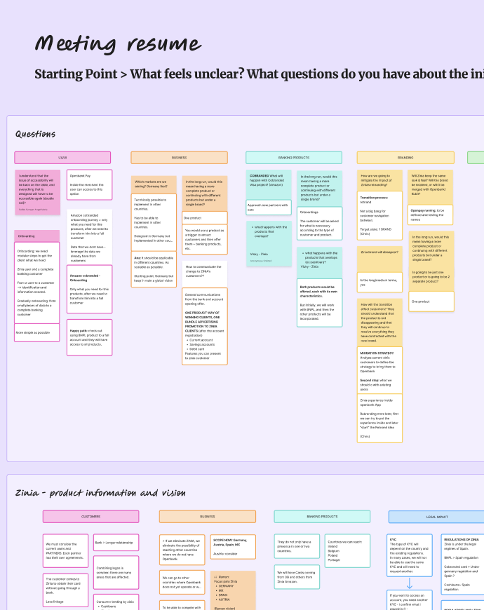
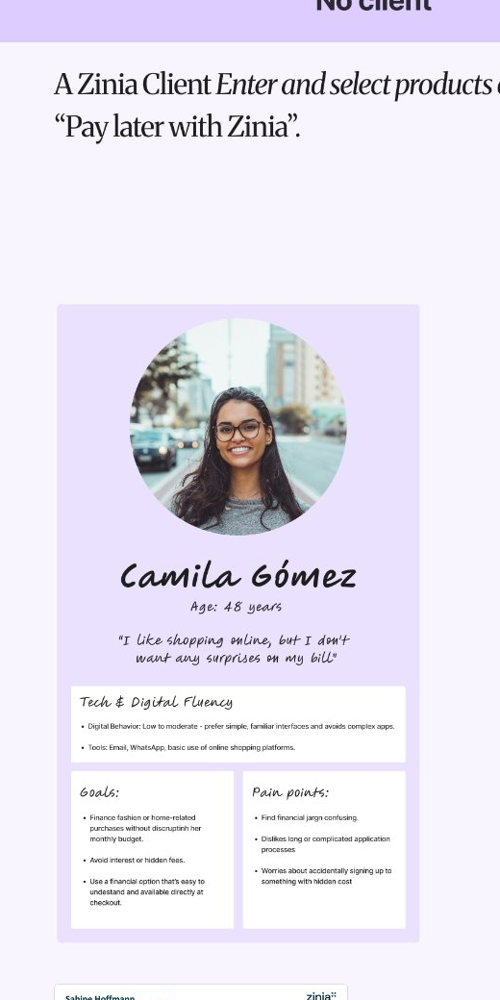
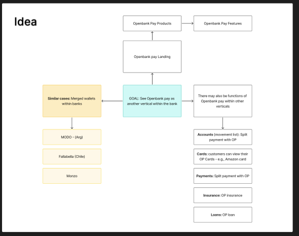
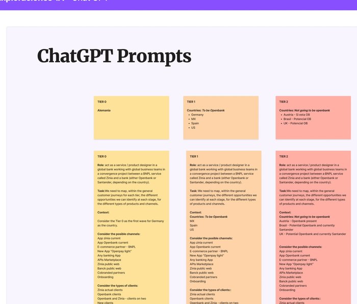
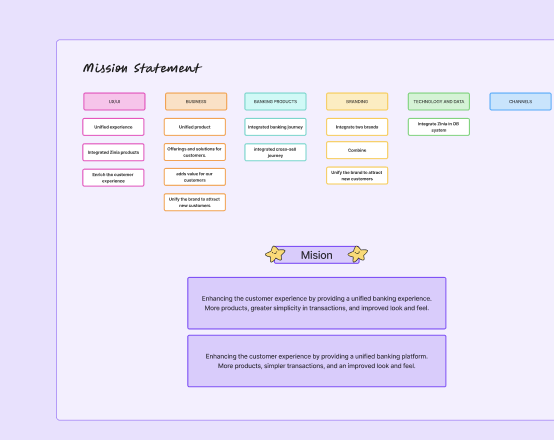

Openbank × Openpay Unification
A proposal for the German market on how to integrate the Buy Now, Pay Later platform Zinia — renamed Openpay after being acquired by Grupo Santander — into the Openbank app.
01. The Challenge
Zinia, a Buy Now, Pay Later platform, was acquired by Grupo Santander and rebranded as Openpay. The proposal explores how to bring this BNPL experience into the Openbank app for the German market, instead of keeping it as a separate product.
The three biggest challenges so far:
- Acting as an intermediary between both teams — Openbank and Openpay — and meeting the expectations of each.
- Finding a way to make the transition frictionless for the customer.
- At a UI level, finding solutions where Openbank's design system components can absorb Openpay's without breaking either one.
02. Research & Workshops
Three workshops, two teams, one shared map
The proposal centered mainly on research. We ran 3 workshops with the Openbank Germany and Openpay teams to understand their expectations, objectives and implications before touching any UI.
We used conversational AI tools — ChatGPT and Claude — throughout the entire discovery phase: mapping customer journeys by tier and country, comparing rollout channels, and surfacing regulatory differences across markets early on.
The conclusion from those first workshops was clear: we needed to put both teams' information and interests in common, and from there it became evident that the outcome wouldn't be two connected apps, but a single app — Openbank's.
Snapshots from the FigJam boards we worked from — the workshops ran fully remote.





03. The Roadmap
A progressive unification, in three phases.
As of today, the project has been split into 3 phases. Phase 1 focuses mainly on marketing campaigns; phases 2 and 3 bring in actual design work, progressively folding both apps into a single one — Openbank.
| P1 Q4 2026 | P2 Q2 2027 | P3 ASAP | |
|---|---|---|---|
| DS | — | Decide how Openbank Pay's L3 components map into Openbank (L1, NoComponent, or new CR) | — |
| Openbank Pay | Onboarding flow · sidebar link · promo banner | — | Co-design the Orders product |
| Openbank | Success modal · sidebar link · promo banner | Sidebar → Orders nav · embed Orders (iframe) | Redesign Orders in Openbank's look & feel · define Global vs. Country flow |
Openbank Pay acquisition journey
Convert Openpay customers into Openbank customers via a marketing campaign trigger, across two separate app experiences.
01
Checkout completed
Customer completes a purchase with Openbank Pay.
02
Tracked invitation offer
A targeted invitation is sent after purchase.
03
Standard Openbank onboarding
Customer opens an account through the existing onboarding flow.
04
Incentive delivered
The agreed incentive is credited after eligibility is confirmed.
05
Openbank Pay entry point
Customer accesses Openbank Pay from the Openbank menu.
06
Openbank entry point in Pay
Customer sees a contextual link to open Openbank.
Account linking & servicing in Openbank
Openbank Pay is linked to and serviced from within Openbank, still triggered by marketing, still two app experiences underneath.
01
Checkout completed
Customer completes a purchase with Openbank Pay.
02
Openbank login
Customer logs in to Openbank.
03
Pay relationship detected
A possible Openbank Pay relationship is identified without requiring extra data.
04
Confirm, authenticate and link
Customer confirms ownership, authenticates, and gives consent.
05
Pay access in Openbank
Linked product appears in Global Position and side menu.
06
View products, service & support
Customer manages Openbank Pay products embedded in Openbank.
One single app for all products and services
One identity, one onboarding, one app. Progressive onboarding lets Openbank reuse existing data and only ask for what's missing.
01
Pay checkout completed
Customer makes a purchase with Openbank Pay, data kept to a quick Openbank Onboarding.
02
Openbank login
Customer opens Openbank to manage their Openbank Pay product.
03
One single app, progressive onboarding
Customer sees all Openbank products offered from the same experience.
04
Select additional banking product
Customer chooses a new banking product from the same experience.
05
Progressive onboarding
Openbank reuses available data and only asks for what's missing.
06
Manage Pay and banking products
Pay and banking products are all unified in one Openbank experience.
Currently in progress — the roadmap above reflects where the project stands today, as we continue aligning both teams phase by phase toward a single Openbank experience.